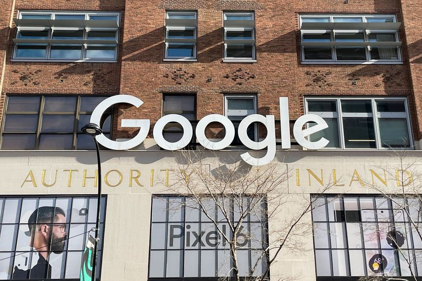
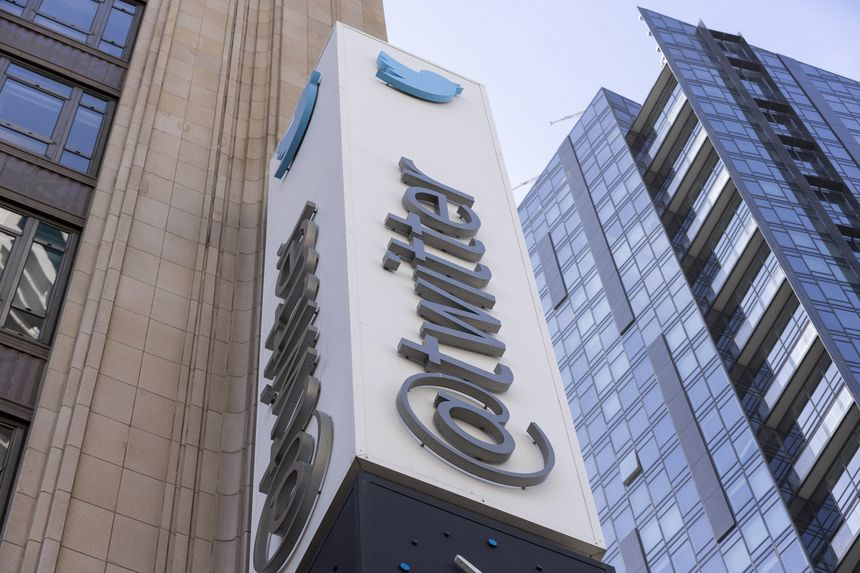
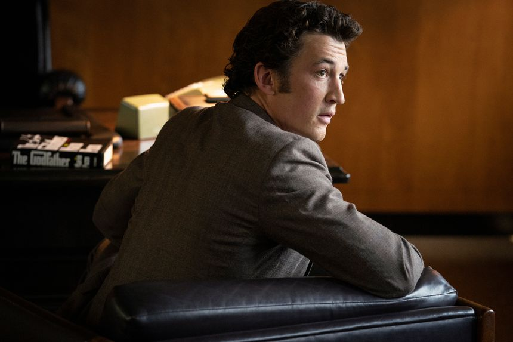
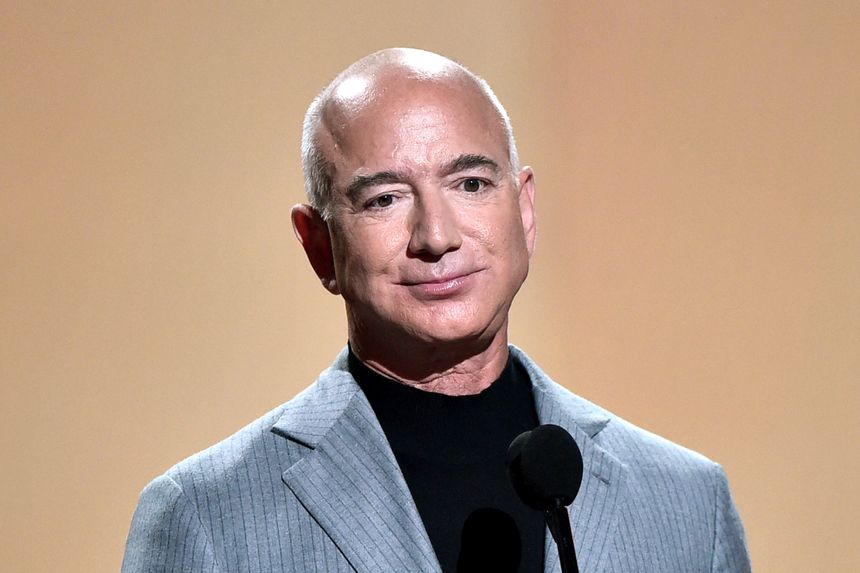
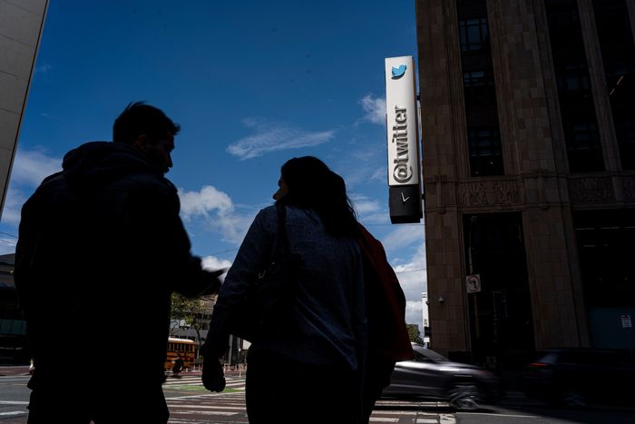
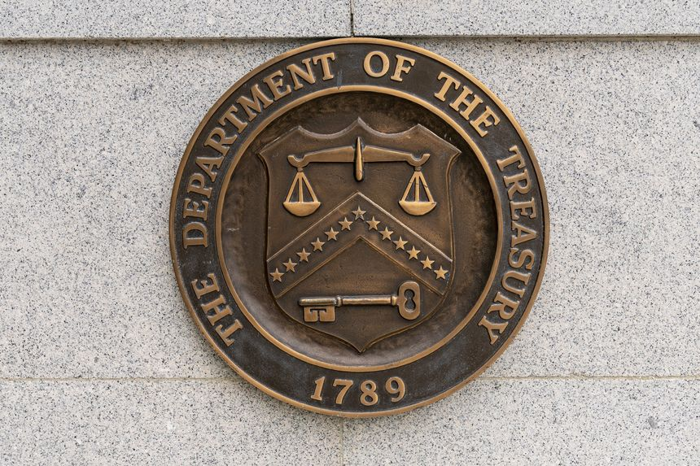
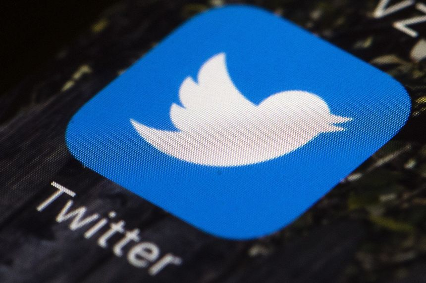
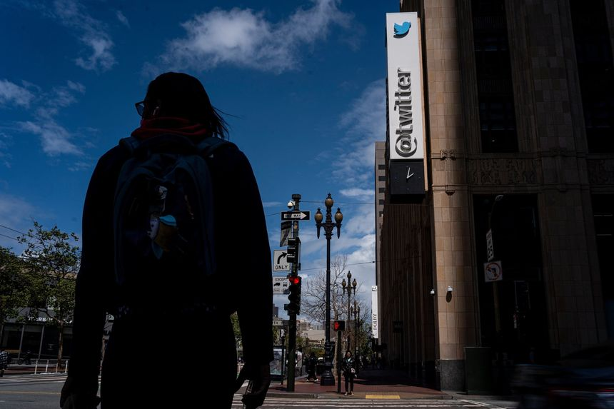

| 时间 | 分类 | 标题 | 副标题 | 正文 | 图片 |
|---|---|---|---|---|---|
| 2022-04-26 19:07:00 | Deals | Mattel Has Held Talks With Buyout Firms | Private-equity firms circling the Barbie maker include Apollo, L Catterton | Mattel Inc. has held talks with private-equity firms about a potential sale, people familiar with the matter said, just a few months after the famed toy company declared its corporate turnaround complete. Mattel has held informal talks with firms including Apollo Global Management Inc. and L Catterton, the people said. The talks are at an early stage and may not result in a deal. |
|
| 2022-04-26 19:02:00 | Markets | Google’s Immunity Doesn’t Quite Hold | Downturn in online advertising hits YouTube and other segments harder than expected | Google is resilient, but it isn’t bulletproof. First-quarter results from parent company Alphabet Inc. on Tuesday afternoon showed that the world’s largest online advertising company is hardly immune to the pressures being felt by others in the sector. Total advertising revenue grew 22% year over year to $54.7 billion, but still fell shy of the $55 billion expected by Wall Street. The main culprit was YouTube, where ad revenue of nearly $6.9 billion fell about 8% short of the $7.4 billion analysts were expecting. YouTube’s ad revenue also saw substantial deceleration, growing 14% on year in the most recent quarter compared with 25% growth in the December period and 49% growth in last year’s first quarter. |
 |
| 2022-04-26 18:50:00 | Opinion | Do Billionaires Have Too Much Money? | Students discuss wealth inequality and its impact on national culture. | Editor’s note: In this Future View, students discuss billionaires and wealth disparity. Next week we’ll ask, “Responding to Covid, American colleges increasingly relied on remote learning, and, once in place, these distance learning courses are proving hard to halt. Is this move towards online classes for traditional college education a good trend?” Students should click here to submit opinions of fewer than 250 words before May 3. The best responses will be published that night. |
|
| 2022-04-26 18:39:00 | Opinion | Abortion and the Supreme Court | This is the moment for the Justices to turn the issue over to the voters. | The Supreme Court will soon decide an abortion case in which Mississippi has asked the Justices to overturn Roe v. Wade. The oral argument suggested that five Justices lean toward doing so, but a ferocious lobbying campaign is trying to change their minds. The campaign may be the most apocalyptic in its warnings since the ObamaCare case in 2012. Democrats are demanding that Justice Clarence Thomas resign because of the political activism of his wife. The New Yorker published a long piece portraying Justice Amy Coney Barrett as almost a religious cultist. |
|
| 2022-04-26 18:36:00 | Opinion | More Hilarious Wailing at Elon Musk | Wait, you mean Twitter could ban one party’s political speech? | My, what a progressive panic Elon Musk’s $44 billion purchase of Twitter has inspired. MSNBC host Ari Melber warns that Mr. Musk could hack the political debate by having the website “secretly ban one party’s candidate” or “turn down the reach of their stuff, and turn up the reach of something else, and the rest of us might not even find out about it until after the election.” Uh, hello? Twitter has banned President Trump. A month before the 2020 election, it moved to “turn down the reach” of the New York Post’s reporting on Hunter Biden’s laptop. Those actions weren’t secret, but Mr. Melber’s alarm echoes what conservatives have been saying for years about big tech’s censorship. As long as the usual Silicon Valley overlords controlled all of social media, progressives didn’t mind. But Elon Musk buys Twitter, and suddenly freer speech is a national crisis. |
|
| 2022-04-26 18:35:00 | Opinion | Trust Iran but Don’t Verify | The U.S. frets about secret nuclear activity but keeps negotiating. | Talks in Vienna to revive the 2015 Iran nuclear deal paused last month, and it isn’t clear whether they’ll resume or officially end. A little-noticed line in a State Department report published last week makes a good case for formally walking away. “The United States has concluded that serious concerns remained outstanding regarding possible undeclared nuclear material and activities in Iran,” according to State’s annual report on compliance with arms control and nonproliferation agreements. The document notes that the Islamic Republic has not fully cooperated with the International Atomic Energy Agency (IAEA), which is trying to investigate possible secret nuclear activity at four sites around the country. |
|
| 2022-04-26 18:32:00 | Opinion | China’s South Pacific Power Play | Australian Prime Minister Scott Morrison draws a ‘red line’ on a possible Chinese military base in the Solomon Islands. | Barack Obama’s credibility never recovered after he failed to enforce an announced red line in Syria. It’s no exaggeration to say that whether a national leader keeps his word on such issues can change history. That’s why Australian Prime Minister Scott Morrison’s recent remarks about Chinese power in the Pacific are worth noting. “I share the same red line that the United States has when it comes to these issues,” Mr. Morrison said Sunday of China’s growing influence in the Solomon Islands. “We won’t be having Chinese military naval bases in our region, on our doorstep.” He declined to elaborate on how Canberra would respond if his red line is crossed. |
|
| 2022-04-26 17:47:00 | Books & Arts | ‘America’s Book’ Review: The Word Out of Season | For much of its history, American society was awash in the biblical ideas, themes, names and gimcrackery—for good and ill. | Many Americans born after 1960 have trouble imagining that for much of the country’s history the Bible was a chief source of national identity. Older Hollywood directors sometimes get it right. Take “Liberty Heights” (1999), written and directed by Barry Levinson (born 1942). The film explores relations among Jews, blacks and WASPs during the 1950s when Baltimore’s public schools were integrated. In one scene the Jewish son of a burlesque-theater owner watches an African-American girl, the daughter of a surgeon, during their class’s recitation of Psalm 23. They have different takes. He likens it to singing the National Anthem before an Orioles game. She says it provides a brief respite before a busy day of study. Whether ceremonial or therapeutic, Bible-reading in public schools was, by the 1950s, among the last uncontested conventions of America’s Bible civilization. Mark Noll’s “America’s Book: The Rise and Decline of a Bible Civilization, 1794-1911” explains how the Bible achieved this status. The new nation’s rejection of European forms of Christendom such as sacral monarchy and state churches left the Bible to bear the burden of America’s attempt to create a Christian civilization. A completely secular republic was never a possibility except for the most free-thinking of free thinkers. The Founders virtually to a man insisted that a republic depended on a virtuous citizenry, and that the best source of morality was religion. Despite the variety of Protestant denominations, church leaders and public officials agreed that the Bible was the best and most reliable guide for determining moral consensus. |
|
| 2022-04-26 17:34:00 | Business | Alphabet Earnings Show Slowing Sales Growth on Digital-Ad Tumult | Google parent’s cloud investments aimed at catching Amazon and Microsoft weigh on its bottom line | Google parent Alphabet Inc. posted slower sales growth as global economic turmoil disrupted digital advertising spending. The company said first quarter sales rose 23% from the year-ago period, the lowest rate for the tech giant since late 2020. The company at the time saw a period of massive sales growth, as small and large businesses alike flooded into the ad market seeking to win customers who spent the early period of the pandemic sequestered in their homes. Company sales advanced 41% last year. |
|
| 2022-04-26 17:26:00 | CIO Journal | Pentagon Taps Lyft’s Machine-Learning Chief | Craig Martell was named as the Defense Department’s first chief digital and artificial intelligence officer | ||
| 2022-04-26 17:19:00 | CFO Journal | Elon Musk’s Buyout Will Load Twitter With Debt, High Leverage Ratio | Deal’s financing will increase social-media company’s interest expense to $845 million a year |  | |
| 2022-04-26 17:16:00 | Opinion | Elon Musk Can Fix Twitter Culture | Its new owner might tap Google for ideas on detoxifying a politicized workplace. | Elon Musk has said he wants to run Twitter because of its importance as a free speech “town square” and not to make money, but the deal he just signed requires him to make money, and that’s fine. The lenders, at least, will want their $25.5 billion share of the $44 billion purchase price back, some of it secured by Tesla stock. Mr. Musk’s own finances will be in a world of hurt if his Twitter turnaround fails and simultaneously the helium comes out of Tesla’s stock price. So financial realities will work to corral his impulses to some extent. He won’t be ending Twitter’s reliance on advertising, which accounts for 90% of revenue. He won’t be junking the “content moderation” needed to keep advertisers from fleeing. |
|
| 2022-04-26 17:08:00 | Opinion | ‘The Skin of Our Teeth’ Review: Apocalypse Now at Lincoln Center | Thornton Wilder’s comedy about a family that endures calamities across millennia feels simultaneously up-to-date and aged. | New York Unless you have been dozing for the past two years, you may have noticed that things are looking pretty apocalyptic out there. The pandemic has claimed the lives of almost a million Americans. Extreme weather events have become so frequent they hardly make headlines. Russia’s brutal war in Ukraine is killing thousands. |
 |
| 2022-04-26 17:08:00 | Markets | Tesla Stock Sinks After Twitter Deal | Vehicle maker’s stock suffers worst day in more than a year after Elon Musk’s announced purchase | Tesla Inc. shares logged their biggest one-day drop in more than a year after founder Elon Musk said he would buy Twitter Inc. in a $44 billion deal. The shares slid 12% to $876.42 and were the worst performers in the tech-heavy Nasdaq-100 index Tuesday. The stock had its worst day since September 2020, when it fell 21% after it was passed over for inclusion in the S&P 500 index. |
|
| 2022-04-26 17:07:00 | Opinion | Ukraine Needs Far More Heavy Weapons | NATO military aid is one-tenth of what Europe is paying Russia for energy. | ‘The first step in winning is believing you can win,” Defense Secretary Lloyd Austin said in Kyiv on Sunday. “They believe that we can win; we believe that they can win if they have the right equipment, the right support.” Yet U.S. and North Atlantic Treaty Organization aid to Ukraine has been too little, too late. The war is being waged in the air, on sea and on land. The air war was conceded to Russia a month ago when President Biden, unnerved by Vladimir Putin’s threats, vetoed the transfer of Polish MiGs to Ukraine. With Russia bombing civilians daily, that timorous decision must be reversed. |
|
| 2022-04-26 17:06:00 | Books & Arts | ‘The Offer’ Review: The Movie Masterpiece That Almost Wasn’t | A new series on Paramount+ dramatizes the shaky road ‘The Godfather’ took from page to screen. | Spoiler Alert: “The Godfather” got made. Nonspoiler alert: In “The Offer,” it almost doesn’t. “Godfather” cultists, and we are legion, will find the entire 10-part dramatic series—presented by the studio that almost didn’t make the movie—not just impossible to refuse, but nerve-racking: A world without Francis Ford Coppola’s masterpiece? The film that may well be the crowning achievement of American cinema? Unthinkable. And yet, in the early ’70s, it was very thinkable. In fact, the series more than implies that the film was a series of small miracles from the time it rose out of Mario Puzo’s pulpy novel to the night it won the Best Picture Oscar for 1972. As never happened, Michelangelo might have fallen off the scaffold; Mozart might have been born to a butcher; Ronald Reagan might actually have starred in “Casablanca.” How masterpieces do happen is usually the result of fortuitous happenstance, pitfalls avoided, stupidity sidestepped. “The Offer” catalogs it all. The series, created by Michael Tolkin, carries a very unusual source credit—“Based on Albert S. Ruddy’s experience of making ‘The Godfather.’” Not surprisingly, Mr. Ruddy (now 92 years old) is the hero of the piece, portrayed with heroic nerve and considerable charisma by Miles Teller (“Whiplash”), as the producer who hurdles the myriad human obstacles preventing the Corleone family’s emigration from page to screen: Paramount president Robert Evans (Matthew Goode) is desperate to salvage his struggling studio, but not so desperate that he doesn’t foist his wife, Ali MacGraw (Meredith Garretson), on director Arthur Hiller (Jake Regal) for the lead in “Love Story.” Mob boss Joe Colombo (Giovanni Ribisi) is using his newly formed Italian-American Civil Rights League to convince America that the Mafia doesn’t exist, something “The Godfather” is insisting it does. Charles Bluhdorn (Burn Gorman), head of Gulf+Western (which then owned Paramount), is inclined to go along with the charming Ruddy, though his unctuous functionary, Barry Lapidus (Colin Hanks), is undermining the film at every turn. |
 |
| 2022-04-26 17:04:00 | Opinion | President Ulysses S. Grant Deserves More Respect | The Civil War general and commander of the Union Army was derided as someone who should ‘have lived in a cave and worn skins.’ | There is nothing stranger in American history than the up-and-down reputation of Ulysses S. Grant. Grant, who was born April 27, 1822, was the commanding general who ended the Civil War. He managed the great campaigns that captured Vicksburg and Richmond, saved Chattanooga, and compelled the surrender of Robert E. Lee and the main Confederate field army, and did it so well that President Abraham Lincoln apologized for not showing him enough confidence. Grant’s “Personal Memoirs,” published after he died in 1885, are a landmark of 19th-century American prose. |
|
| 2022-04-26 17:03:00 | Opinion | The Biden Administration’s New Salvo Against Charter Schools | An Education Department study finds the regular system is failing. The same department seeks to block alternatives. | The national debate over racial propaganda and sex education in elementary schools is important, but it’s almost certainly less consequential than the continuing inability of our K-12 schools to teach basic reading and math. The people who defend and benefit most from the egregious status quo—teachers-union heavies and the Democratic pols they mainly support—would much rather argue about critical race theory and Disney if it means we’re not talking about the failure to ensure that elementary-school children perform at grade level. |
|
| 2022-04-26 17:02:00 | Books & Arts | ‘Alberto Giacometti: Toward the Ultimate Figure’ Review: A Sculptor’s Search for Humanity | An exhibition at the Cleveland Museum of Art looks at the artist’s existential strivings through his figurative forms. | ||
| 2022-04-26 17:00:00 | Books & Arts | ‘The Survivor’ Review: Sparring With Himself and Others | Ben Foster stars as Harry Haft in Barry Levinson’s biopic about the boxer who fought in Nazi concentration camps and after the war in America. | After “Diner,” “Rain Man,” “The Natural,” “Bugsy,” “Bandits” and that mischievous landmine “Wag the Dog,” Barry Levinson deserves the benefit of the doubt. It’s safe to assume that he knows what he’s doing, and where he’s going, even if your initial instinct might be to run in the opposite direction. It’s like that with “The Survivor”—a title that seems presumptuous, even provocative. The term is synonymous with those who survived the Nazi horrors of World War II. The film is about a Jew who lived through the Holocaust. But why the survivor? The title makes some sense, if you consider that the history of its real-life subject, Harry Haft (Ben Foster), is a provocation, too. |
|
| 2022-04-26 16:33:00 | CIO Journal | TD Bank Opens Florida Tech Office | The bank is tapping region’s emerging tech talent base to support cloud, machine learning and automation efforts |  |
|
| 2022-04-26 16:16:00 | Opinion | Bezos and the New York Times Have a Question for Elon | Another reminder why we need open public debate. | Years ago in a different America, media folk would express concern that a rich guy buying a media outlet might enforce an ideological viewpoint. Now with Elon Musk and Twitter, the media pack is terrified that he won’t. The great fear among the press corps is that the social-media platform might allow all consumer thoughts to be expressed. Perhaps we can thank the failures of university educators for the amazing transformation of U.S. journalists from stouthearted defenders of free speech to its most formidable domestic opponents. The new conventional media view is that the most important challenge facing Twitter is figuring out which theories to suppress and which nonviolent speakers to silence. The idea that one might allow an open forum is now treated by many prominent pundits almost as a reason to call the vice squad. CNN’s Brian Stelter warns: |
 |
| 2022-04-26 14:38:00 | Business | Kevin Hart’s Media Empire Expands With $100 Million Private-Equity Investment | Newly formed company will use minority investment from Abry Partners to create new opportunities for comedic talent, it said | Actor and comedian Kevin Hart is expanding his entertainment empire, backed by a $100 million investment from private-equity firm Abry Partners. The new venture, HartBeat, combines Mr. Hart’s two existing companies: film and production company HartBeat Productions and Laugh Out Loud, which focuses on marketing, sales and branded content and has a distribution network. |
|
| 2022-04-26 13:58:00 | Markets | Russia Tried to Sell a Huge Slug of Oil. Nobody Wanted It. | Russia’s crude exports hit a snag when Rosneft struggled to find buyers | Russia failed to sell a huge batch of oil, a sign that soon-to-be imposed sanctions against its state oil giant are playing havoc with the energy industry that undergirds its bruised economy. Moscow maintained a brisk pace of energy exports in the two months after the invasion, bringing in revenue that Kyiv says funds the Kremlin war machine. Many U.S. allies left oil and gas shipments out of their harshest sanctions on Russia. Importers in India and elsewhere swooped in to buy cheap Russian barrels at a time of rocketing energy prices. |
|
| 2022-04-26 13:39:00 | Business | New York Post and Former Digital Editor Resolve Discrimination Suit | In lawsuit, Michelle Gotthelf alleged she was sexually harassed by former Editor in Chief Col Allan | The New York Post and its former senior editor Michelle Gotthelf resolved a discrimination lawsuit in which Ms. Gotthelf alleged she had been sexually harassed by former Editor in Chief Col Allan and fired after she told the Post’s current editor in chief about it. The lawsuit will be withdrawn, according to a joint statement provided by a New York Post spokeswoman. The lawsuit was filed in January, days after Ms. Gotthelf’s departure as the New York Post’s digital editor in chief. |
|
| 2022-04-26 12:41:00 | Opinion | BLM’s Problems Are Bigger Than the Grift | Organizations founded by leftist revolutionaries have profoundly transformed America already. | Jason Riley is right that Black Lives Matter’s popularity has declined since its 2020 peak and that news “about the organization’s spending habits” will make things worse (“BLM’s Antipolice Racket is Coming Undone,” Upward Mobility, April 20). And there’s more. The IRS doesn’t know where millions raised in 2020 have gone. California and Washington, no bastions of conservatism, have suspended fundraising by the group’s flagship, the BLM Global Network Foundation, because it is delinquent on its 2020 financial reports. But the foundation’s biggest problem has never been the grift. Nor has it been that its self-avowed Marxist founders have gone on a mansion-buying spree with money well-intentioned Americans and craven corporations donated. |
|
| 2022-04-26 12:41:00 | Opinion | Please, No Operation Warp Speed for Green Energy | There is no vaccine, moonshot or atom bomb for alternative energy. | Choose any dramatic government-sponsored technical program—the Manhattan Project, the Apollo Program and so forth—and people will want to apply it to alternative “green” energy: In “What Global Warming Has in Common With Covid,” (op-ed, April 13), Tomas Philipson writes, “The Biden administration needs an Operation Warp Speed for green-energy alternatives.” I am sympathetic to some of Mr. Philipson’s ideas: spurring private innovation and removing regulatory barriers. But the problems of an energy transition are at most superficially like those of Covid, and the differences are vast. |
|
| 2022-04-26 12:40:00 | Opinion | Steer U.S. Aid to Lebanon Away From Hezbollah | Direct it to private groups that promote healthy politics and peace. | Regarding Toni Nissi’s op-ed “There’s Hope for a More Peaceful Lebanon” (April 24): Mr. Nissi asks whether Lebanese can expect greater U.S. assistance if they increase their opposition to Hezbollah, Iran’s terrorist proxy dominating their country’s politics. The answer should be yes. U.S. foreign assistance now flows to Lebanon’s Hezbollah-controlled national government and to infrastructure projects in Hezbollah strongholds. It would serve American interests to reallocate it in ways that counter Iran’s influence. Lebanon’s politics, including its upcoming parliamentary elections, are in Hezbollah’s grip. If the U.S. is going to provide aid to Lebanon, it makes more sense to direct it away from national and municipal authorities, which are under Hezbollah’s influence, and toward private groups that promote healthy political principles and peace with Lebanon’s neighbors. |
|
| 2022-04-26 11:52:00 | Markets | The Contrasting Fortunes of HSBC and UBS | Buyback plans offer a hint of what lenders expect from the year ahead, and the Swiss bank was characteristically more upbeat in first-quarter results | Judging by their buyback promises, UBS , the billionaire’s bank, is more confident about weathering the year ahead than HSBC , its Asia-focused rival. The Swiss wealth manager had its best first quarter since 2007, and on Monday nudged up 2022 buyback expectations to the top of its range. HSBC took a more muted line: It will follow through on earlier buyback promises, but warned that more were unlikely this year. It is shaping up to be a mixed quarter for European banks, as was the case for their U.S. peers. |
|
| 2022-04-26 11:24:00 | Opinion | How Elon Musk Can Liberate Twitter | The site needs moderation, but there are ways to do that while abolishing viewpoint discrimination. | Elon Musk wants Twitter to “adhere to free speech principles.” That’s easier said than done. Porn, racial slurs and spam are all protected under the First Amendment, but few users want to see them. Even for the narrow categories of speech that aren’t protected, nearly all content blocking on social media goes against the first principle of free-speech jurisprudence—the ban on prior restraint, or censorship without judicial review. The first step to solving these conundrums is to recognize that different free-speech principles apply in different contexts, and there are three key different kinds of forums. Speech protection is strongest in a “public forum.” If Twitter were such a forum, almost all content blocking would be an impermissible prior restraint. But Twitter isn’t a public forum, most obviously because it isn’t run by the government (even though its censorship is sometimes at official behest). At the other end of the spectrum is private property. If you’re a visitor in someone else’s home, he’s free to kick you out simply for offending him. |
|
| 2022-04-26 10:51:00 | Markets | Rates Stampede May Startle Some Investors | There could be rapid movements of cash at firms such as Charles Schwab as the Federal Reserve tightens, but higher rates are still ultimately a benefit | Rapidly rising interest rates are waking people up to the earning potential of cash. That will be an adjustment for banks and brokers—but it isn’t the end of the world. Across banking, there is worry among investors about how quickly cheap deposits may reprice or depart in search of better yields. For brokerage giant and bank Charles Schwab , this pressure comes in the form of what it calls cash sorting: People take some of their yet-to-be invested cash that is earning very little and move it into a money-market fund or other higher-yielding alternative. Even if the money is moved into a money-market fund offered by Schwab, that typically nets less in fees for Schwab than what it would earn deploying that same cash on its own balance sheet. |
|
| 2022-04-26 09:36:00 | Markets | Chinese Stocks Face a Reality Check | After last month’s hopes of economic stimulus, investors are realizing that actual government easing policies may be limited and slow | China’s stock market staged a sudden recovery last month as investors became hopeful of stimulus from Beijing. Fears of prolonged Covid-19 restrictions have prompted an equally sudden reassessment. Chinese shares have plummeted this week amid worries that Beijing is headed for a lockdown, following in the footsteps of Shanghai, where social distancing has been enforced for weeks despite mounting economic costs. That has dashed hopes that the government may take a less stringent approach in dealing with the more contagious Omicron variant. |
|
| 2022-04-26 09:00:00 | Economy | World Bank Projects Elevated Energy, Food Prices, Keeping Upward Pressure on Inflation | Global energy costs are expected to jump more than 50% this year, food prices to climb 22.9% | WASHINGTON—Global prices of fuel and food are forecast to rise sharply this year due to shocks caused by Russia’s invasion of Ukraine, the World Bank said Tuesday, a sign higher commodity costs will continue to put upward pressure on inflation. The World Bank expects commodity prices to remain elevated for years to come, as the war in Ukraine alters how commodities are traded, produced and consumed around the world. |
|
| 2022-04-26 08:54:00 | Economy | March Orders for Long-Lasting Goods Rose on Auto, Computer Demand | U.S. durable-goods orders rose 0.8% last month, posting their fifth increase in six months amid supply-chain disruptions and high inflation | Orders for long-lasting goods such as appliances, computers and cars rose in March, resuming gains after a sharp drop in demand at the end of the winter. New orders for products meant to last at least three years increased by 0.8% to a seasonally adjusted $275 billion in March following a 1.7% drop in February, the Commerce Department said Tuesday. The increase was driven by orders for autos, computers and other electronics and marked the fifth increase over the last six months. |
|
| 2022-04-26 08:52:00 | Business | Warner Bros. Discovery Won’t Overspend to Win Streaming Subscribers, CEO David Zaslav Says | Newly formed entertainment firm, which includes CNN, HBO and Warner Bros., will move fast, chief executive says | Warner Bros. Discovery Inc. Chief Executive David Zaslav said the newly formed entertainment conglomerate, whose assets include CNN, HBO and Warner Bros., would move fast to put his vision in place. “We will clearly take swift and decisive actions on certain items, as you saw on CNN+ last week,” Mr. Zaslav told analysts on an earnings call Tuesday morning referring to the decision to shutter CNN’s direct-to-consumer streaming service about a month after it launched. |
|
| 2022-04-26 08:46:00 | Markets | New York City Wants to Amp Up Risk in Workers’ Pensions | Laws aimed at keeping portfolios conservative are getting pushback from cash-strapped pension funds | New York City’s comptroller is the latest public official trying to change laws aimed at limiting risk in pension investments, as U.S. state and local pension funds try to plug shortfalls in a low-return environment. Comptroller Brad Lander, who oversees about $260 billion in retirement money for city police, firefighters, teachers and other public workers, is asking New York lawmakers for more flexibility to invest in private markets, high-yield debt and foreign stocks. The state comptroller’s office, which supervises another $280 billion in retirement assets, views the idea favorably, with a representative saying such flexibility “is key in times of market volatility.” |
|
| 2022-04-26 08:25:00 | Business | GE Cautions Outlook Pressured by Supply-Chain Disruptions | Conglomerate posts strong quarterly sales in aviation unit, decline in wind-power business | General Electric Co. warned that its business would be pressured by supply-chain disruptions this year after reporting strong quarterly growth for its jet-engine unit as commercial air traffic recovers from a pandemic-fueled decline. The Boston conglomerate said Tuesday that its full-year results were on track to come in at the low end of predictions it issued in January. The manufacturer continues to face pressure from supply-chain disruptions and rising raw-material and freight costs, and impact from Russia’s invasion of Ukraine. |
|
| 2022-04-26 08:03:00 | Real Estate | Affordability Drives Home-Buyer Activity in WSJ/Realtor Housing Index | Rapid City, S. D., metro area ranks No. 1 for quarter, as remote-work capabilities allow buyers to push into cheaper markets | Less expensive cities with strong local economies climbed The Wall Street Journal/Realtor.com Emerging Housing Markets Index in the first quarter, another sign that many home buyers are giving priority to affordability. Fast-rising housing prices have pushed buyers from expensive coastal cities into cheaper housing markets in recent years. Expanded remote-work opportunities and a search for different lifestyles during the Covid-19 pandemic have accelerated the trend. |
|
| 2022-04-26 07:00:00 | Markets | Microsoft Will Need to Get ‘Call of Duty’ Back on Target | Marquee game franchise expected to play big role in Microsoft’s cloud gaming future, but players are bleeding out | For all the obstacles Microsoft still faces in its effort to acquire Activision Blizzard , getting the deal done might actually turn out to be the easy part. In its first-quarter results Monday morning, Activision said the deal is still on track to close in Microsoft’s next fiscal year, which begins in July. That long window for a transaction announced in January reflects the high level of scrutiny the deal is expected to receive among lawmakers, who have started eyeing big tech’s moves closely. Indeed, last month saw four U.S. senators express concerns about the transaction to the Federal Trade Commission, saying the deal could exacerbate Activision’s now-well-documented internal culture troubles. “We are deeply concerned about consolidation in the tech industry and its impact on workers,” the letter read. |
|
| 2022-04-26 06:39:00 | Markets | UBS Profit Gets Boost From Trading Uptick | Switzerland’s biggest bank by assets said net profit in the first quarter rose 17% to $2.14 billion | UBS Group AG said it is in good shape to navigate geopolitical uncertainties and is benefiting from more client trading in its investment bank. Switzerland’s biggest bank by assets said the uptick in trading stocks and other assets lifted net profit in the first quarter, even as its main wealth management business slowed down. Net profit in the quarter was $2.14 billion, up 17% from $1.82 billion in the first quarter of 2021 when UBS took losses exiting stock positions of family office Archegos Capital Management. |
|
| 2022-04-26 06:35:00 | Markets | HSBC’s Quarterly Profit Drops 28% | Bank hit by provisions for souring loans in Russia and China, but says it is benefiting from rising interest rates | HSBC Holdings PLC said its profit for the first quarter fell 28% year-over-year, as it made provisions for souring loans in Russia and China, but the banking giant said rising global interest rates would help it hit longer-term targets. The London-based lender’s profit attributable to ordinary shareholders totaled $2.8 billion in January through March. While earnings had been boosted a year earlier by the release of $435 million of provisions as the global economy recovered from the worst of the Covid-19 pandemic, in the first three months of this year HSBC’s earnings were dented by $642 million of new expected credit losses. |
|
| 2022-04-26 06:30:00 | Markets | Stock Futures Slip Ahead of Tech Earnings | Results are due from Alphabet and Microsoft after the closing bell | U.S. stock futures edged down ahead of a wave of earnings reports from major technology and blue-chip firms as investors contended with fears about slowing growth. Futures tied to the S&P 500 shed 0.3%. Dow Jones Industrial Average Futures declined 0.3% and technology-heavy Nasdaq-100 futures lost 0.4%. |
|
| 2022-04-26 06:03:00 | Markets | Twitter in Elon’s Hands Is No Idle Distraction | The stakes are high for Elon Musk’s personal finances, his backers and Twitter’s status as the 21st century’s public square | Elon Musk may like to kid around on Twitter , but his impending ownership of the platform is no joke, to him or anyone else. Mr. Musk maintains his interest in Twitter isn’t about money, but empirically it very much is. Not only will the company now account for around a sixth of his net worth, the world’s largest, it will also put him in hock to creditors. His discourse on the platform—both strategic and slipshod—has for years earned him free publicity for his other wildly ambitious business ventures. Just how much the avian-themed microblogging service had to do with his wider success is debatable, but based on his intense interest in how it is managed, it seems safe to say he believes it was significant. |
|
| 2022-04-26 06:00:00 | Pro VC Industry News | Venture Capitalists Flock to Crypto While Deals in Other Sectors Slow | Competition among investors to get into deals is intense. ‘We know that crypto is going to be expensive,’ one person said. | Venture investors are rushing into crypto startups, while deal-making in other sectors slows. Blockchain and crypto startups raised $9.2 billion through 461 equity deals globally in the first quarter of this year, according to CB Insights. The amount is 4.5% above the $8.8 billion raised in the prior quarter, and 155% above the year-ago quarter, according to the data provider. |
|
| 2022-04-26 06:00:00 | Sustainable Business | Cement Makers Burn Turbine Blades as Wind Power Faces Recycling Headache | Incinerating blades in cement-factory kilns instead of sending them to landfill reduces emissions overall, researchers say | Old wind-turbine blades are getting a new lease on life—in cement. Turbines are mostly made of steel, a widely recyclable material. But their blades are constructed of complex composite materials such as fiberglass and balsa wood that are difficult to separate and process, presenting a recycling challenge. As a result, blades that reach the end of their lives often end up in landfill. |
|
| 2022-04-26 05:30:00 | Finance | Beauty Company Oddity to Offer Crypto Token Tied to IPO | So-called security token automatically converts into stock when company goes public | Oddity Tech Ltd., a New York-based online beauty-care retailer, is going to offer investors a new kind of security that combines traditional equities with the digital infrastructure behind cryptocurrencies. Oddity, which sells products through its Il Makiage and SpoiledChild brands, is offering a so-called security token. The token converts into a share of stock in an eventual initial public offering at a 20% discount to the IPO price. Proceeds will be used for general corporate purposes, the company said. |
|
| 2022-04-26 05:30:00 | Markets | Real Yields Wade Toward Positive Territory, Denting Stocks | The rise of inflation-adjusted bond yields has hit some of Wall Street’s more speculative bets | Moves inside in the U.S. government bond market rout are undermining support for Wall Street’s pandemic-era stock gains, the latest blow to the speculative bets that proliferated in the era of rock-bottom rates and economic stimulus. The yield on 10-year Treasury notes is losing investors less and less money after adjusting for inflation. One gauge, the yield on the 10-year Treasury inflation-protected security, or TIPS, closed April 19 at 0%, according to Tradeweb . That is the first time it wasn’t negative since March 2020, when global central banks slashed rates to support economies thrown into shock by the coronavirus pandemic. |
|
| 2022-04-25 19:05:00 | Opinion | ‘Remain in Mexico’ Policy Goes to the Supreme Court | The Justices have cause to rule that Biden’s cancellation of the Trump-era immigration policy is illegal. | The Supreme Court on Tuesday will hear a challenge (Biden v. Texas) to the Biden Administration’s repeal of the Trump Migrant Protection Protocols—aka “Remain in Mexico.” But the stakes go beyond the border and strike at the heart of the Constitution’s separation of powers. President Biden on his first day in office directed his Department of Homeland Security to review whether to terminate or modify Remain in Mexico. DHS ended the policy last June. The two questions before the High Court are whether DHS followed proper administrative procedure, and whether the law lets it end the policy. The answers are no, and no. |
|
| 2022-04-25 19:04:00 | Opinion | Elon Musk, Twitter and Free Speech | The $44 billion purchase of the social-media company is a gamble that could break Silicon Valley’s culture of progressive conformity. | With his typical enthusiasm for viral high-jinks, Elon Musk once formally titled himself Tesla ’s “Technoking,” and now perhaps he will take a similar role at Twitter . After a speedy love-hate business courtship that lasted two weeks, the social-media website agreed Monday to accept Mr. Musk’s buyout offer of $44 billion. What a gamble for Mr. Musk, who argues he can unlock value in Twitter that its current leadership can’t. According to the Journal, the financing proposal he announced last week includes $21 billion in personal equity. That amounts to roughly 10% of his net worth, going by the Forbes estimate. As collateral on debt, Mr. Musk would also pledge about a third of his Tesla stake. It isn’t every day the world’s richest man makes a bet like this. |
|
| 2022-04-25 19:02:00 | Opinion | Where Are Germany’s Weapons for Ukraine? | Berlin slow-rolls heavy arms deliveries out of confusion, or fear of Russian retaliation. | German Chancellor Olaf Scholz promised Germans and their allies a transformation in Berlin’s approach to foreign and defense policy. As voters and North Atlantic Treaty partners try to assess whether he meant it, a question looms: Where are Germany’s arms for Ukraine? The snail-like pace of weapons shipments to Kyiv’s military is becoming a political scandal in Germany. Berlin has improved on its laughable offer of 5,000 helmets, extended in mid-February before Vladimir Putin started his invasion. Germany has since shipped an assortment of anti-aircraft missiles, rocket-propelled grenades, machine guns, mines and the like. |
|
| 2022-04-25 19:00:00 | States Challenge Coin Dealer’s ‘Preemptive’ Bankruptcy Filing | Lear Capital filed for bankruptcy to address potential future claims surrounding its gold- and silver-coin business | Officials from 24 states want coin dealer Lear Capital Inc.’s chapter 11 case thrown out, alleging the business filed for bankruptcy to evade government investigations into its business practices, not for a legitimate purpose. Attorneys general and financial regulators said in court papers Monday that Lear Capital’s bankruptcy case wasn’t tied to any financial distress but was filed “solely to gain a tactical advantage” in pending investigations of the company. Lear,... |
||
| 2022-04-25 18:34:00 | Opinion | Hong Kong’s Nobel Prize Nominees | Five democracy advocates are tipped for the 2022 peace honor. | Hong Kong dissidents continue to languish in prison, and Beijing hopes the world forgets. So it’s welcome news that more than a dozen academics in 10 countries have nominated five of the city’s most prominent democracy advocates for the 2022 Nobel Peace Prize. The nominees include our friend Jimmy Lai, founder of Apple Daily, and Gwyneth Ho, a former reporter for Stand News. Police have forced the closures of both publications, seized their assets without due process, and imprisoned some of their staff. The Nobel nominees also include Lee Cheuk-yan and Chow Hang-tung, who helped organize Hong Kong’s annual vigil for victims of the Tiananmen Square massacre; and Joshua Wong, who first drew Beijing’s ire as a teen leader of the 2014 Umbrella Movement. |
|
| 2022-04-25 18:31:00 | Opinion | The Strategic Logic of Russia’s War on Ukraine | Putin’s invasion was the product of miscalculation. But his calculations were driven by realpolitik. | The verdict is in: Russia invaded Ukraine for two reasons. One is Moscow’s obsessive pursuit of nationalist and imperial ambitions—unifying the two countries and eliminating a separate Ukrainian identity. The other is Vladimir Putin’s misperception—he is an insulated, overconfident autocrat who misplayed his hand. These theories are surely true, but years of working in and writing about wars have taught me there’s usually more to the story. Whether it’s a world war, a U.S. invasion or a West African rebellion, observers are quick to focus on passions and mistakes and to demonize leaders who launch a conflict. Yet most wars have strategic roots as well, ones that work in concert with passions and mistakes. Ignoring this makes finding a path to peace difficult. |
|
| 2022-04-25 18:30:00 | Opinion | Amazon Takes On the National Labor Relations Board | After losing a union vote in New York, the company accuses the NLRB of bias. | Amazon is pushing back against the recent union election at its Staten Island facility in a novel way: by taking on the National Labor Relations Board itself, alleging that the NLRB behaved in ways showing bias in favor of the union. In the process, Amazon may force courts to clarify an important ambiguity in American labor law and make the NLRB, the agency charged with overseeing workplace elections, act more neutrally. In the 25 official objections Amazon filed with the board, the company argues that the NLRB’s “interference and mismanagement” prevented “a free and fair election” at its Staten Island facility. Among other things, Amazon alleges that the board arbitrarily excluded some workers from the bargaining unit in which the union had to show 30% support to hold a vote. The company also alleges the NLRB let union representatives distribute marijuana to workers in exchange for votes and intimidate workers opposed to collective bargaining. (The union’s lawyer told the Associated Press that the intimidation allegation is “patently absurd” and handing out marijuana “is no different from distributing free T-shirts and it certainly did not act to interfere with the election.”) |
|
| 2022-04-25 18:30:00 | Opinion | The Biden White House’s Cyberwarfare Power Grab | The Pentagon needs clarity about its authority, not micromanagement. | To most onlookers, the U.S. appears to be in the midst of a successful cyber defense campaign against Russia. As Gen. Paul Nakasone, commander of U.S. Cyber Command, recently testified before Congress, the U.S. military is deploying military members to the region to sit “side by side with our partners.” Cyber Command has also “crafted options for national decision makers” and is “conducting operations as directed.” Yet at a pivotal time in Ukrainian cyber defense, the Biden administration is reportedly considering a proposal to take away Defense Department authorities to conduct offensive cyber operations and reinstate a centralized approval process from the White House. This would be a mistake. All departments and agencies within the federal government operate under different authorities, delegated from the president through executive policies and from Congress through law. These define what an organization can and can’t do and when it needs to ask for permission. In a conflict or military campaign, the president (and sometimes Congress) delegates authorities to the Defense Department to conduct operations. |
|
| 2022-04-25 18:08:00 | Opinion | An Economics Lesson From a Science Teacher | Mr. Seaver’s mural taught me that life is about trade-offs. | The best economics lesson I ever learned came from a science teacher. Mr. Seaver was a barrel-chested guy with a foghorn voice. My junior-high locker was directly across from his classroom. One morning, he appeared in the hallway toting a stepladder. From a leather bag he pulled a stencil set, pencils, a few rags and a small pot of black paint. Balancing his tools as he climbed the ladder, he traced out an inscription on the wall: “Life is not determined by what you want. Life is determined by the choices you make.” The message was at odds with Mr. Seaver’s blusterous style, but I was transfixed. No one before had asked me to consider this notion. I’d been under the juvenile impression the world would always be my oyster. |
|
| 2022-04-25 18:07:00 | Books & Arts | ‘The Great Stewardess Rebellion’ Review: Revolution in the Sky | In the mid-1960s, airlines promised male passengers a flight made alluring by young female company. Turbulence was just ahead. | Flight attendants in the 1960s were, to a one, young, thin, single women. But did they have to be in order to do the job? When stewardesses, as they were then called, began appealing to the newly created Equal Employment Opportunity Commission to challenge the airlines’ discriminatory hiring practices, the airlines fought back, using what was known as the BFOQ loophole in Title VII of the Civil Rights Act of 1964. They defended their right to hire only women and to fire them if they gained weight, married, got pregnant or entered their 30s, arguing that being a young, thin, single woman was, in fact, a “bona fide occupational qualification” for the position. “It wouldn’t be much of an exaggeration to say that in the 1960s the airplane cabin was the most sexist workplace in America,” writes Nell McShane Wulfhart in “The Great Stewardess Rebellion.” Most passengers at midcentury were male business travelers; airlines believed that having young, pretty stewardesses gave them a competitive advantage. Ms. Wulfhart’s exhilarating account describes how a number of stewardesses, galvanized by the women’s movement, took on the airlines and won. |
|
| 2022-04-25 18:02:00 | Business | Whirlpool Says Consumers’ Appliance Demand Is Waning, as Costs Mount | Appliance maker cuts sales forecast, begins strategic review of Europe, Middle East and Africa division | Whirlpool Corp. said U.S. consumers’ demand for appliances is slowing two years into the pandemic, as the dishwasher and refrigerator maker cut its sales forecast and said it would review an international division. Whirlpool said Monday that sales fell 8.2% in its first quarter of this year compared with the same quarter a year before. The company said revenue over the three months ended March 31 remained 14% higher than the first quarter of 2020, indicating that people are continuing to spend more on appliances than before the pandemic. |
|
| 2022-04-25 18:00:00 | Opinion | Notable & Quotable: Zelensky’s Good Friday Address | ‘We believe in the victory of life over death. And we pray that death loses.’ | Ukrainian President Volodymyr Zelensky in an April 22 address to his nation (ellipses in official transcript): |
|
| 2022-04-25 17:53:00 | KKR Banks Its Biggest Buyout Fund Yet at $19 Billion | The fund includes $2 billion from the New York firm and surpassed its $17.6 billion fund raised in 2006 | KKR & Co. wrapped up its largest-ever buyout fund with $19 billion in investor commitments in a fundraising effort that broke an in-house record that has stood for more than 15 years. The New York-based firm’s latest vehicle, KKR North America Fund XIII, is about 8% bigger than the $17.6 billion it collected for its KKR 2006 Fund LP and includes... |
||
| 2022-04-25 17:48:00 | Markets | Twitter Accepts Elon Musk’s Offer to Buy Company in $44 Billion Deal | Agreement to take social-media network private marks close of dramatic courtship | Twitter Inc. on Monday accepted Elon Musk’s bid to take over the company, which would give the world’s richest man control over the social-media network where he is also among its most influential users. The $44 billion deal marks the close of a dramatic courtship and a change of heart at Twitter, where many executives and board members initially opposed Mr. Musk’s takeover approach. The deal has polarized Twitter employees, users and regulators over the power tech giants wield in determining the parameters of acceptable discourse on the internet and how those companies enforce their rules. |
 |
| 2022-04-25 17:12:00 | Books & Arts | ‘Mahal’ by Toro y Moi Review: A Sampling of Musical Talent | The latest album from the chillwave pioneer highlights the artist’s compositional strengths, jumping among eras and genres with ease. | ||
| 2022-04-25 17:10:00 | Books & Arts | ‘Lucia di Lammermoor’ Review: Despair Made Magnetic | The Met’s new production of the Donizetti work, by Simon Stone and dubbed ‘Lucia: Closeups of a Cursed Life,’ transports the tragic tale to a dying American Rust Belt community in the present day. | ||
| 2022-04-25 16:28:00 | Opinion | Florida, Utah Take on ESG Farce | If you thought Disney made the ‘corporate social responsibility’ crowd look bad, how about Russia? | Florida’s effort to defend its schools against the Walt Disney Co. has exposed the empty rhetoric of “stakeholder capitalism.” Now Utah is shining a light on the broader movement for “corporate social responsibility.” In both cases, aggressive virtue signals may conceal political agendas that are not in the interest of consumers, investors, workers or voters. Moreover, attempts to grade companies on how responsible they are have recently yielded results that are almost beyond belief. Karen Pierog reports in the Bond Buyer on Utah’s scrap with one of the credit-ratings giants: |
|
| 2022-04-25 16:10:00 | Markets | Coca-Cola Is Having a Moment | Beverage giant is outperforming even other consumer-staples companies in ability to pass on rising costs | Investors looking for a haven amid war, inflation and market turmoil appear to have found comfort in a classic. Coca-Cola shares are up 10.2% so far this year through Friday, compared with a 10.4% decline in the S&P 500. That compares with a gain of only around 2% for the S&P 500 consumer-staples index. |
|
| 2022-04-25 16:08:00 | Risk & Compliance Journal | Logistics Company Toll Reaches Settlement With Regulator Over Alleged Sanctions Violations | The Office of Foreign Assets Control said the $6.1 million settlement involved nearly 3,000 transactions for shipments made by Toll or its affiliates through sanctioned regimes, including Iran |  | |
| 2022-04-25 16:07:00 | Markets | Lunch With Warren Buffett Goes on Auction Block One Last Time | Berkshire Hathaway CEO to end annual fundraiser for California charity | A steakhouse lunch with Berkshire Hathaway Inc. Chief Executive Warren Buffett will return to the auction block this June after the annual charity fundraiser was put on a two-year pause during the Covid-19 pandemic. This will be the last time bidders can vie for a sit-down lunch with Mr. Buffett, who has raised $34 million for a California homeless organization over the past two decades with his Power of One event. |
|
| 2022-04-25 15:48:00 | CFO Journal | Mattress Companies Trim Costs, Delay Product Launches as Demand Falls | Demand is down due to lower consumer confidence in the U.S. after a pandemic-induced boom, analysts say | ||
| 2022-04-25 15:46:00 | Markets | Elon Musk’s Backing Means Twitter Needs Ads to Stay Aloft | Musk will need the cash flow from Twitter’s advertising business to pay off debt used to back deal | Wall Street has long known that it is better to play with other people’s money. But in the case of Elon Musk, other people’s money may limit just how much playing he can do with Twitter . The campaign by the World’s Richest Person on paper to take over the social network has proven to be a success. Twitter announced Monday afternoon that a deal has been reached, at the price of $54.20 per share in cash that was Mr. Musk’s initial offer from April 14. Twitter’s board was reportedly compelled to give the bid a fresh look after Mr. Musk filed papers late last week reporting $46.5 billion in financial backing for the bid. |
|
| 2022-04-25 15:21:00 | Business | What Role Does a Corporate Board Play in Sustainability Issues? | Boards are more involved than ever. But there is no consensus yet on best practices. | ||
| 2022-04-25 15:16:00 | Opinion | John Kerry Responds on the Future of Natural Gas | The U.S. climate envoy defends the transition to clean power as an ‘opportunity,’ not a ‘death sentence,’ for the industry. | Your editorial “John Kerry Says the Darndest Things” (April 23) completely distorts the meaning, context and reality, not only of my argument, but of what the private sector is already doing. Natural gas is central to a smart and achievable policy to cut greenhouse-gas emissions today. In the near term, that means pairing with renewables to clean up electricity. In the next decade, it also means abating emissions from gas itself. Industry sees this as an opportunity, not a “death sentence.” American oil and gas CEOs have said they see carbon capture as a $3 trillion to $5 trillion industry by 2050. As the country moves to 100% clean power by 2035, American companies lead on technologies to produce emission-free electricity with gas. There are immense job opportunities in the gas industry’s transition to net zero. Don’t take my word for it; look at the industry’s investments. |
|
| 2022-04-25 15:15:00 | Opinion | California Wants to Stifle Medical Innovation | Aren’t patients allowed to choose doctors with different opinions? | Allysia Finley’s op-ed “California’s Medical ‘Misinformation’ Crusade Could Cost Lives” (April 21) is entirely correct. Respect for patient autonomy is one of the pillars of principle-based medical ethics, and it is considered by many as the most significant because of the value placed in modern Western society on individualism and liberty. Aren’t patients allowed to choose doctors with different opinions? Medical science is ever changing. Today’s contrarian concepts often are tomorrow’s standards of care. Ignaz Semmelweis, the Hungarian obstetrician who introduced hand washing into medical practice, was ostracized. I wrote against such one-size-fits-all approaches as the 39-week rule in obstetrics. Years later, the rule was found to increase stillbirths and other fetal and maternal morbidities. |
|
| 2022-04-25 15:14:00 | Opinion | Twitter’s CEO Doesn’t Much Like America’s Constitution | What Parag Agrawal means by ‘healthy public conversation’ is that only what he and his staff want to hear is not banned. | I would like to suggest an eleventh point to add to Bradley Smith’s op-ed “10 Things for Elon Musk to Do at Twitter” (April 8). That would be to remove Parag Agrawal as Twitter CEO. Mr. Agrawal has been quoted as saying: “Our role is not to be bound by the First Amendment, but our role is to serve a healthy public conversation.” He thinks that Twitter should thus “focus less on thinking about free speech, but thinking about how the times have changed.” The Constitution has not changed, and it is still the law of the land, fundamental to our democracy. Moreover, what Mr. Agrawal means by “healthy public conversation” is that only what he and his staff want to hear is not banned. |
 |
| 2022-04-25 15:13:00 | Opinion | Congress Can Solve Oklahoma’s McGirt Problem | The Supreme Court did not hold that the U.S. can never renege on treaties. | From his letter “The Choctaw Nation of Oklahoma Responds on McGirt” (April 20), Chief Garry Batton seems not to have read the opinions in McGirt v. Oklahoma. The Supreme Court did not hold, let alone confirm as a bedrock principle, that the U.S. must honor treaties. To the contrary, the entire court agreed that Congress has the power to renege on treaties. The majority concluded that in the case of disestablishing the Choctaw reservation, Congress had never actually done so. The problems that have emerged from the McGirt decision could be remedied promptly by Congress. Rather than scolding Justice Neil Gorsuch for his majority opinion, let’s call on Congress to fix the problem with legislation. |
|
| 2022-04-25 14:41:00 | Markets | Bed Bath & Beyond: Can Baby Get Out of the Bathwater? | News of potential suitors on Buybuy Baby isn’t enough to lift lukewarm sentiment on Bed Bath & Beyond | Bed Bath & Beyond ’s precious, still-growing Buybuy Baby business is attracting interest. Will the thriving baby-products chain finally see the light of day? On Friday, The Wall Street Journal reported that potential suitors have emerged for Bed Bath & Beyond’s Buybuy Baby business. Suitors include private-equity firm Cerberus Capital Management and a special-purpose acquisition company chaired by former Casper Sleep Chief Executive Philip Krim. |
|
| 2022-04-25 14:37:00 | Economy | Bank of Canada’s Macklem Says Half-Point Rate Rise Will Be in Play in June Decision | After a half-point increase earlier this month, Tiff Macklem says the central bank is ready to use its tools ‘forcefully, if needed’ to slow inflation that hit 6.7% in March | OTTAWA—Bank of Canada Gov. Tiff Macklem said senior officials are likely to consider another half-percentage point increase in its main interest rate when they deliberate ahead of the central bank’s next policy decision on June 1. In testimony Monday before Canadian lawmakers, Mr. Macklem offered a glimpse of just how aggressive central banks are prepared to be to cool inflation, which was already at elevated levels, then moved into higher gear after the war in Ukraine lifted prices for fuel, food and other commodities. |
|
| 2022-04-25 13:03:00 | Opinion | GOP Leaders Remain Shackled to Donald Trump | In private, they say they know the 2020 election wasn’t stolen. But they refuse to say it in public. | If the revelation that an ambitious politician says one thing to one audience and another to somebody else comes as a shock to you, you might want to get out more. While the sheer scale and quantity of their falsehoods lead to speculation that politicians are born with a particular laryngeal feature that facilitates speech from both sides of the mouth, it’s only because of the very public nature of their work that their mendacity gets so much attention. |
|
| 2022-04-25 13:02:00 | Opinion | Special Districts Are Kingdoms of Unaccountable Power | Disney’s Reedy Creek is only one of 38,000 such entities nationwide—twice the number of U.S. cities. | Until recently, the Reedy Creek Improvement District was an obscure bit of trivia for students of urban politics. In 1967 Florida created the district so that Walt Disney World could control its local region without input from voters. Last week it entered the national news when the Florida Legislature, in response to Disney’s criticism of the state, passed a law that dissolves Reedy Creek and thus ends Disney’s personal government. Yet Reedy Creek is only one example of the proliferation of powerful “special districts,” shadowy local governments that exercise ever-greater control over taxation and spending. Florida alone has 1,800 such districts. According to the U.S. Census, there are more than 38,000 of them across the country—double the number of cities. |
|
| 2022-04-25 11:28:00 | Business | Countries Ramp Up Rules Regarding ESG Disclosure | The SEC has proposed rules to make more formal the current voluntary ‘alphabet soup’ approach | Countries around the world are introducing rules requiring companies to disclose information about their impact on society and the environment. This can involve anything from tracking greenhouse-gas emissions and plastic waste to reporting on diversity and social inclusion. As other governments add or firm up their rules, the Securities and Exchange Commission has proposed regulations requiring public companies to disclose extensive climate-related information. |
|
| 2022-04-25 11:22:00 | Business | Activision Blizzard Revenue Falls as Call of Duty Demand Sputters | The videogame developer reports lower quarterly profit and sales as it works to finalize an acquisition deal with Microsoft | Activision Blizzard Inc. ‘s first-quarter sales and profit plunged as demand for its Call of Duty videogame franchise fell. The videogame company, which in January agreed to be purchased by Microsoft Corp. for $75 billion, posted a 22.3% drop in sales from a year ago, reflecting weaker premium sales for “Call of Duty: Vanguard,” the latest installment in the popular franchise, as well as lower engagement with “Call of Duty: Warzone,” a free-to-play title. |
|
| 2022-04-25 11:03:00 | Markets | Amazon Follows Walmart’s Lead Reaching New Shoppers in India | Amazon is waking up to social commerce as a way to add new customers in India, helping it go head-to-head with Walmart-owned Flipkart | Amazon ’s dominance in e-commerce is unparalleled, but traditional retailer Walmart has been gaining ground for years. That script was flipped in India last week, as Amazon followed in the footsteps of a Walmart-owned domestic rival to enter the burgeoning social-commerce space by making a small acquisition. Amazon’s delayed entry into the space underscores the competitive intensity of the India market, where companies are constantly looking for newer ways to sell. For Amazon, which is facing increased competition not only from Walmart but local giants Reliance Industries and Tata Group, a little more aggression to enter newer areas in the world’s second-largest internet market wouldn’t be unwarranted. |
|
| 2022-04-25 08:00:00 | Life & Work | The Window to Enjoy Your Empty Nest Is Shrinking | Older Americans embrace a carpe diem attitude after the children leave, fearing health and other issues could come soon | Susie Chase and Stuart Sutley didn’t waste time after their youngest child left for college last fall. Within weeks, they were hosting dinner parties with friends and colleagues and fixing up their Stevenson, Md., home. They bought fancy skis and made plans to spend more time—just the two of them—exploring the outdoors near their country house in Maine. |
|
| 2022-04-25 07:54:00 | Business | Coca-Cola Posts Higher Quarterly Sales as Demand Holds Up | Beverage giant maintains full-year view despite strong sales amid rising input costs for sugar, aluminum | Coca-Cola Co. logged higher sales for the latest quarter as demand held up amid price increases, which helped the beverage giant offset surging input costs. Despite the stronger-than-expected results, Coke stuck to its full-year earnings guidance, which includes expectations that commodity-cost increases will be a mid-single-digit percentage headwind to the cost of goods sold. |
|
| 2022-04-25 07:14:00 | Markets | Major Credit Suisse Investor Norges Bank Heaps Pressure on Board | Sovereign-wealth fund will defy Credit Suisse’s board recommendation on key votes, saying it wants more accountability at the Swiss bank | The world’s largest sovereign-wealth fund wants a better explanation and more accountability for recent mishaps at Credit Suisse Group AG. Norges Bank Investment Management, the arm of the Norwegian central bank that operates the nearly $1.3 trillion fund, said Sunday it supports a shareholder proposal for a special audit into the bank’s relationship with Greensill Capital, a financing partner that went bankrupt in March 2021. It said it is also voting at the bank’s annual shareholder meeting Friday against a proposal to clear Credit Suisse’s board and senior management of legal liability. |
|
| 2022-04-25 07:00:00 | Markets | A Persian Gulf Stock Boom Draws Foreign Investors | The region is now the world’s one bright spot for listings in a market paralyzed by the Ukraine war and concerns about global economic growth | Foreign investors are pouring money into a Persian Gulf stock-market boom, as energy-rich monarchies spin up their massive government entities into public companies and an oil-price rally fuels interest in the region. Once home to national oil companies and sleepy family businesses, the region is now the world’s one bright spot for initial public offerings in a listings market that elsewhere is paralyzed by the Ukraine war and concerns about global economic growth. |
|
| 2022-04-25 07:00:00 | Paying for Co-Investments Gains Acceptance Among Private-Equity Investors | A survey shows big increases in the proportion of institutional money managers willing to pay fees on such deals | Private-equity investors have pumped billions of dollars into co-investments partly as a way to lower costs. But sponsor-led transactions and competition are changing the outlook for such deals. Traditionally, fund investors only made co-investments alongside their fund’s sponsors and didn’t pay fees or give up a slice of the investment profits to the fund’s general partner in the form of carried interest. Those advantages are becoming less vital, a recent survey shows. As... |
||
| 2022-04-25 06:35:00 | Markets | Twitter Shares Advance on Possible Deal With Elon Musk | Shares of the social-media company still trade below Mr. Musk’s proposed price, a sign that some shareholders remain skeptical a deal will happen | Twitter Inc. shares edged higher in premarket trading Monday, buoyed by expectations that the company could complete a deal to sell itself to Elon Musk as soon as this week. Shares of the social-media company advanced about 0.5% to $49.15 in early premarket trading, pointing to possible gains when the market opens Monday. Twitter’s stock has swung wildly this month as investors have followed the twists and turns of Mr. Musk’s bid to buy the San Francisco-based company. |
 |
| 2022-04-25 06:26:00 | Markets | A Choppy First Quarter May Be as Good as It Gets for European Banks | Market volatility likely made for an uneven start to the year, but the bigger worry is the impact of Russia’s war in Ukraine and high energy costs | The first quarter will be a messy one for Europe’s banks, but with the risk of an economic downturn rising things may only get messier. In quarterly results this week, Deutsche Bank , Barclays , UBS and Credit Suisse will likely paint a mixed overall picture of the European banking sector. While the Russian invasion of Ukraine put the brakes on the recent investment banking boom, it also brought market volatility, particularly in commodities and interest-rate expectations. That will have helped some traders boost their revenues, but also comes with potentially higher capital requirements and risks such as mark-to-market writedowns or counterparty losses. |
|
| 2022-04-25 06:00:00 | Pro VC Industry News | Venture Market Sees Funding Levels Drop While Valuations Rise | A pullback in investment coupled with rising valuations could point to a looming decline in prices for startup deals this year | After setting a feverish investing pace last year, venture capitalists took their foot off the gas in this year’s first quarter. At the same time, valuations largely continued to rise, a dynamic that is causing some investors to expect a price drop for startups this year. Investors committed $144 billion to startups globally in the first quarter, down 19% from the prior quarter, which is the largest percentage decline since the third quarter of 2012, according to analytics firm CB Insights. The number of deals completed also dropped, falling 5% compared with the fourth quarter to 8,835. |
|
| 2022-04-25 05:58:00 | Markets | Stock Futures, Oil Prices and Chinese Shares Fall | Further Covid-19 lockdowns in China could exacerbate supply-chain disruptions, adding to global inflation | U.S. stock futures fell, oil prices declined and Chinese stocks suffered their worst selloff in more than two years as Beijing sticks to its zero-Covid strategy while faced with increasing cases in major cities. Futures for the S&P 500 declined 0.8% Monday. Contracts for the tech-focused Nasdaq-100 retreated 0.7% and futures for the Dow Jones Industrial Average fell 0.8%. The Dow posted its worst one-day percentage change since October 2020 on Friday, tumbling nearly 1,000 points. |
 |
| 2022-04-25 05:51:00 | Markets | Chinese Markets Tank as Investors Worry About Covid-19 Lockdowns | Two widely watched Chinese stock indexes fall roughly 5%, Chinese yuan hits lowest level since November 2020 | Chinese stocks suffered their worst selloff in more than two years and the yuan hit its lowest level since late 2020, as investors worried that strict policies to combat Covid-19 would add to the pressures weighing on China’s economic growth and corporate profits. The battle with the Omicron variant of Covid-19 is adding to a series of challenges for China’s economy and markets, on top of domestic regulatory crackdowns, the war in Ukraine, and a shift toward tighter monetary policy by many central banks to tackle galloping inflation. |
|
| 2022-04-25 05:33:00 | Pro Cyber News | European Wind-Energy Sector Hit in Wave of Hacks | Three Germany-based wind-energy companies have been the targets of cyberattacks since Russia’s invasion of Ukraine; hacks come as governments move to transition away from Russian fuel | ||
| 2022-04-25 05:30:00 | CIO Journal | Google Cloud Chief Says CEOs View Software as Strategic | Google Cloud Chief Executive Thomas Kurian discusses the changing role of the CIO in a world of e-everything | ||
| 2022-04-25 05:30:00 | Finance | Global Auditing Firms Struggle to Leave Russia | Some big consulting firms are out, but auditors face more complicated departures | Soon after Russia invaded Ukraine, global auditing and consulting firms promised to leave the country. For some, the departure is proving to be difficult and potentially embarrassing. Big consulting firms such as Accenture PLC and McKinsey & Co. have quit or stopped all client work. But the Big Four accounting firms are still there, trying to unwind complicated relationships with their Russian counterparts. |
|
| 2022-04-25 05:30:00 | Management | Some Job-Switchers Are Having Second Thoughts | Millions quit jobs for new ones over the past year, but recruiters say many workers wish they hadn’t jumped ship; ‘The grass isn’t always greener’ | ||
| 2022-04-25 05:30:00 | Risk & Compliance Journal | Crypto Industry Can’t Hire Enough Lawyers | Crypto exchanges and companies are poaching attorneys to help them navigate an evolving regulatory landscape and to cut down legal costs | ||
| 2022-04-25 05:30:00 | Markets | Wall Street Finds New Value in Cash as Global Fears Weigh on Markets | As bond yields rise and stock prices wobble, cash is no longer trash on Wall Street | Worries about the war in Ukraine, China’s Covid-19 outbreak, a U.S. or European recession and surging global inflation are making a long-spurned asset increasingly popular with Wall Street’s top money managers these days: cash. As stock and bond prices have retreated from records in the tumult of headlines, more asset managers said they are looking to move funds into low-risk, cash-like assets. That marks a shift from recent years, when steadily climbing equity indexes trained investors to buy every dip and not miss out on gains by holding cash. |
|
| 2022-04-24 20:52:00 | Markets | Melvin Capital Management Scraps Plan to Start Charging Performance Fees Again | ‘I am sorry. I got this one wrong,’ Melvin founder Gabe Plotkin writes to clients | Gabe Plotkin scrapped a plan to start charging performance fees again at his beleaguered hedge fund, Melvin Capital Management, after encountering backlash from investors. Mr. Plotkin on Thursday told clients he planned to shrink the size of Melvin’s hedge fund by several billion, to $5 billion, and resume charging performance fees even though his investors are still sitting on steep losses. Those who had been invested at the start of 2021 have lost 51.8% through March, after a big hit Melvin suffered in January of last year due to the meme-stock rally. |
|
| 2022-04-24 18:34:00 | Opinion | Emmanuel Macron Gets a Second Chance | Will the French President tack to the left or listen to his economic liberalizing instincts? | French President Emmanuel Macron won a second five-year term on Sunday over Marine Le Pen, and the Western alliance against Russia’s invasion of Ukraine can breathe easier. The question is whether Mr. Macron will do more in the next five years to make France great again. The President is the first French leader to earn a second term in two decades, and he owes his victory in part to the luck of having Ms. Le Pen as an opponent. A political newcomer in 2017, he beat Ms. Le Pen by 32 percentage points while warning of his opponent’s radicalism and vowing to restore French dynamism. Projections Sunday showed a smaller if still decisive 58-42 victory. |
|
| 2022-04-24 18:32:00 | Opinion | An FBI Agent’s Straight Talk on McGirt and the Mess in Oklahoma | What happens to a white thief who steals a Native American’s car? ‘Well . . . yeah, nothing.’ |